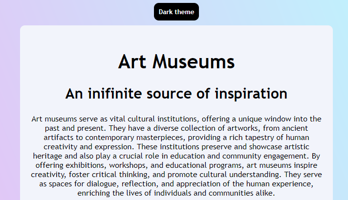
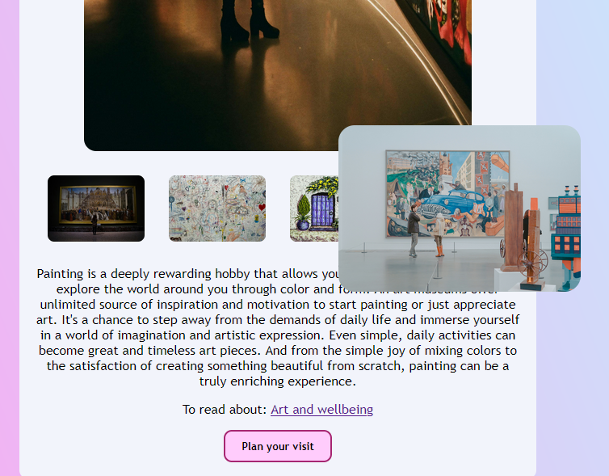

Realizar una página web interactiva usando HMTL, CSS y JavaScripts
Este proyecto es una página web interactiva que invita a la
exploración y la apreciación artística, donde se puso en práctica las
habilidades en desarrollo front-end, con una interfaz interactiva y
amigable
Se usaron diferentes tecnologías y habilidades en desarollo front-end
para construir la pagina web: HTML para la estructura; CSS, el estilo
y la presentación visual, incluyendo colores, fuentes y diseño y
JavaScript, la funcionalidad interactiva, como el botón de "Dark Mode"
y otros efectos.

La interfaz de usuario se realizó usando HTML, CSS y JavaScript, construyendo así una experiencia de usuario fluida e intuitiva. La página web tiene características como imágenes interactiva, botones y dos temas diferentes. Pues el botón "Dark mode" permite a los usuarios cambiar entre un tema claro y oscuro, mejorando la accesibilidad y la personalización.

Las imágenes y botones tienen transiciones y efectos hover para hacer la página más dinámica y atractiva. Además las imágenes son de alta calidad y están optimizadas para web, asegurando una carga rápida y un rendimiento eficiente. Además, se agregaron enlaces a recursos externos.Para visualizar la página web ir a: ArtMuseums